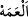

âyeti indirdi.
“Eğer onlara acıyıp da içinde bulundukları sıkıntıyı” kötü durumu, yâni onları
bastıran ve başlarına gelen kıtlık ve kuraklığı “giderseydik, iyice körleşerek” çölde
yolunu kaybeden, nereye gideceği hakkında görüşü ve bilgisi olmayan kimse gibi nereye
yöneleceklerini bilmez bir halde hidâyet ve dalâlet arasında şaşkınlık içerisinde gidip
gelerek “azgınlıklarında” yâni inkârda, büyüklenmede, Rasûl’e ve mü’minlere
düşmanlıkta aşırılıkta “direnirlerdi.” Yâni önceki hallerine geri dönerlerdi ve onlardan
bu dalkavukluk yapma hali giderdi. Nitekim öyle de oldu.
İnad ve kavga şeytanın ve yırtıcı yaratıkların işidir
Kavga ve dövüşü kendinde olan düşmana karşı yapmalısın
“
” yasaklanan bir fiili işlemekte husûmet ve inad etme konusunda diretmektir. “
” bir hususta haddi aşmaktır. İsyan konusunda haddini aşan herkese “
” denir. “
” şaşkınlıktan dolayı bir işte tereddüd etmektir.
İbn Atâ der ki: “Allah’ın ruhlara olan rahmeti müşâhede, sırlara olan rahmeti
murâkabe, kalblere olan rahmeti ma‘rifet, bedenlere olan rahmeti sünnet yolu üzere
onlarda görülen cezbenin izleridir.”
Ebû Bekir b. Tâhir der ki: Sıkıntının kalkması, nefsin arzularından, tûl-i emelden,
baş olma ve yükseklik tutkusundan, dünya sevgisinden kurtulmaktır. Bunların hepsi
mümine zarar veren şeylerdendir.
Vâsitî der ki: “İlmin tuğyânı/azgınlığı, onunla övünmektir. Malın tuğyânı cimriliktir.
Amel ve ibadetin tuğyânı, riyâ ve süm‘adır/görsünler ve duysunlar diye yapmaktır.
Nefsin tuğyânı şehvetlerine uymaktır.”
76. Andolsun, biz onları sıkıntıya düşürdük de yine Rablerine boyun eğmediler,
tazarru ve niyazda da bulunmuyorlar.
“Andolsun, biz onları sıkıntıya düşürdük de” yâni Allah’a yemîn olsun, biz Mekke
halkını dünyevî azâba dûçar ettik. Bu azab, Bedir’de mâruz kaldıkları ölüm ve esârettir.
et-Te’vîlâtü’n-Necmiyye’de der ki: “Onları uyarmak için azâbın en şiddetli
olanlarından değil öncülerinden tattırdık. “Yine Rablerine boyun eğmediler, tazarru ve
niyazda da bulunmuyorlar.” Yâni bundan sonra onların Rablerine boyun eğdiklerini ve
yalvardıklarını görmezsin. Azgınlığa ve büyüklenmeye devam ederler.
“
” boyun eğmek ve kendini aşağı görmektir. “
” ise zayıflığını ve
aşağılığını ızhar etmektir.